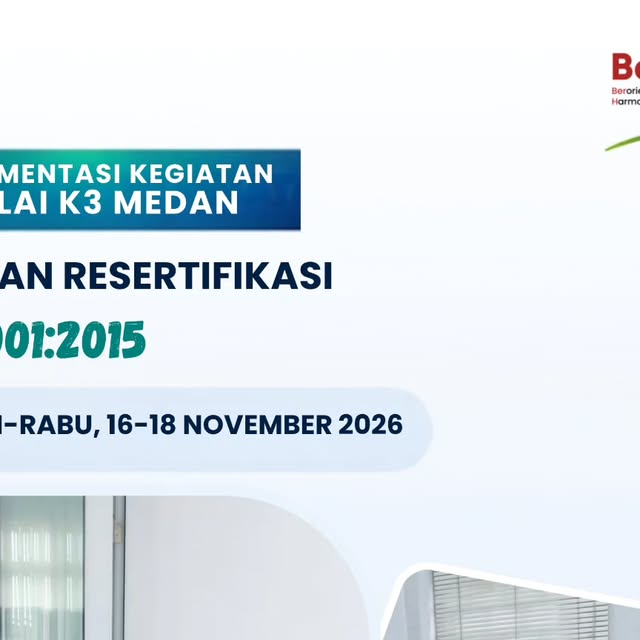
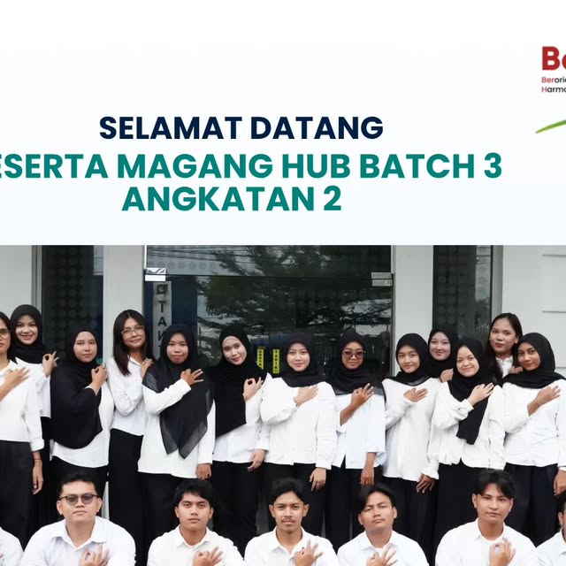
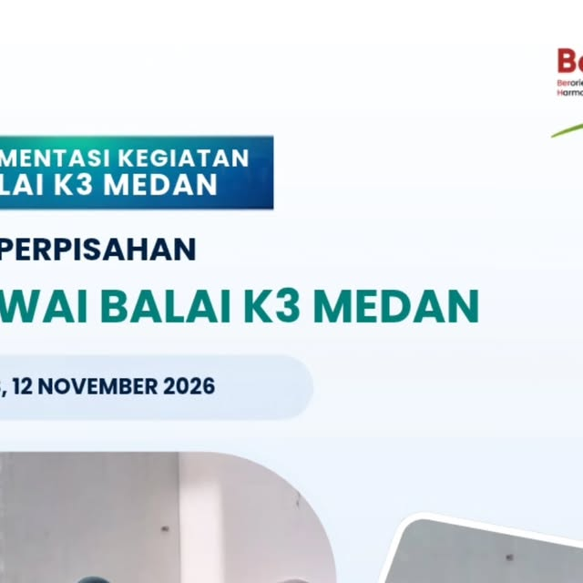
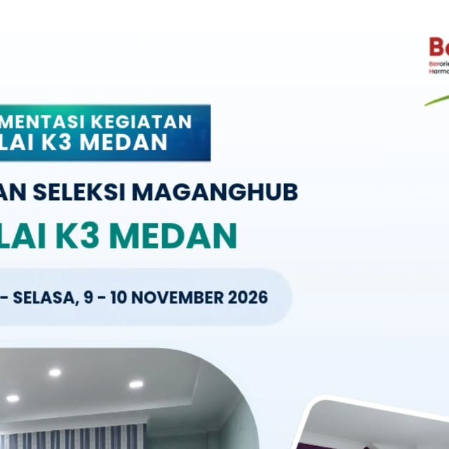
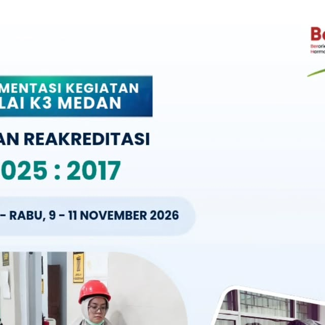
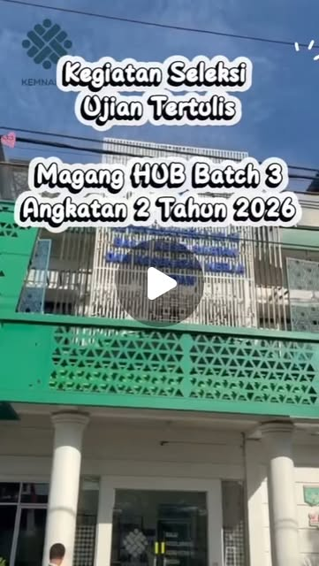
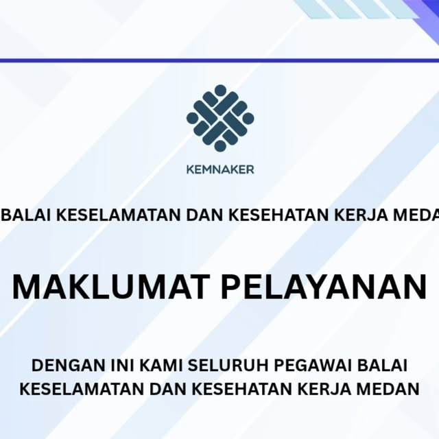
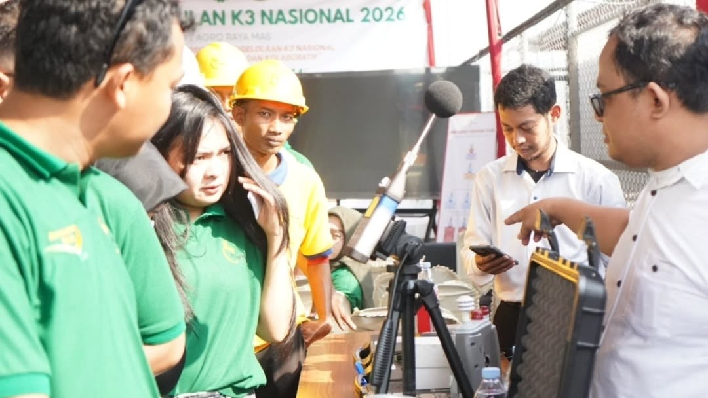
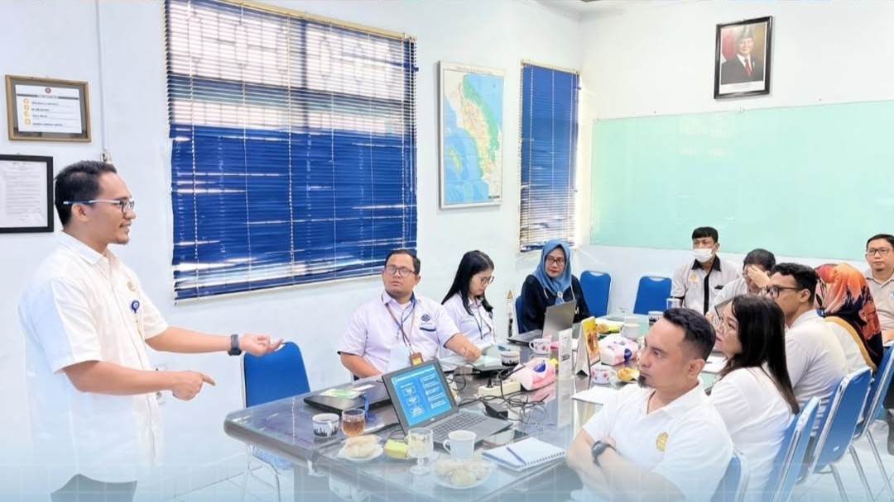
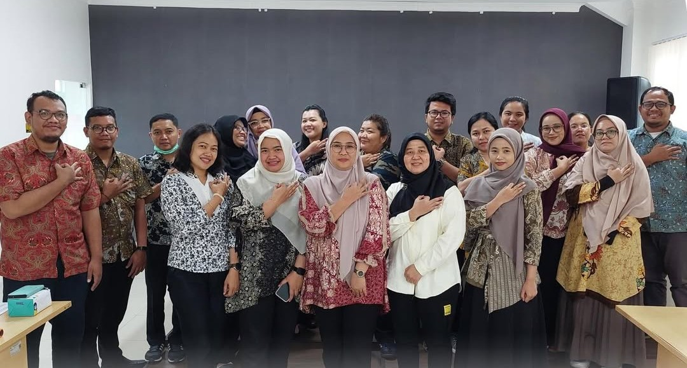

Kecepatan, Akurasi, Ketepatan, dan Akuntabel dalam Pelayanan K3
Pelayanan profesional di bidang keselamatan dan kesehatan kerja
Paket pelatihan K3 bagi tenaga medis, paramedis, dan industri dengan sertifikasi resmi dari Kementerian Ketenagakerjaan.
SelengkapnyaPengujian lingkungan kerja, udara, faktor fisik, kualitas air, hingga pemeriksaan kesehatan kerja secara akurat.
SelengkapnyaIkuti dokumentasi kegiatan pelayanan, bimbingan teknis, dan pengujian K3 secara langsung dari media sosial resmi kami.

Uji Lingkungan
Pelaksanaan pengujian lingkungan kerja di area industri guna memastikan kepatuhan standar keselamatan kerja.
Lihat Postingan
Peningkatan kompetensi personel K3 perusahaan melalui bimbingan teknis audit internal sistem manajemen K3.
Lihat Postingan
Edukasi K3
Penyebarluasan budaya K3 ke institusi pendidikan dan pelaku industri di wilayah kerja Balai K3 Medan.
Lihat Postingan
Pelayanan Teknis
Pelayanan pemeriksaan kesehatan berkala bagi tenaga kerja untuk deteksi dini pencegahan penyakit akibat kerja.
Lihat Postingan
Laboratorium
Pengujian presisi sampel debu, gas kimia, dan kebisingan menggunakan peralatan laboratorium terkalibrasi.
Lihat Postingan
Kunjungan Studi
Penerimaan kunjungan studi mahasiswa/i teknik dan kesehatan masyarakat mengenal instrumentasi pengujian K3.
Lihat Postingan
Reels Kegiatan
Sorotan aksi tim penguji K3 Balai K3 Medan saat menjalankan pengukuran parameter K3 di lapangan industri.
Lihat Postingan
Konsultasi K3
Pendampingan teknis dan konsultasi pemenuhan syarat K3 bagi perusahaan mitra di wilayah Pulau Sumatera.
Lihat Postingan
Sinergi pembinaan pengawasan ketenagakerjaan dan K3 bersama dinas tenaga kerja provinsi se-Sumatera.
Lihat Postingan
Rangkaian peringatan Bulan K3 Nasional mengusung budaya keselamatan kerja menuju Indonesia maju dan produktif.
Lihat Postingan
Pameran K3
Sosialisasi dan pameran teknologi instrumentasi pengujian lingkungan kerja serta pemeriksaan kesehatan tenaga kerja.
Lihat Postingan
Sertifikasi SMK3
Pembinaan penerapan Sistem Manajemen Keselamatan dan Kesehatan Kerja (SMK3) di lingkungan sektor industri manufaktur.
Lihat Postingan
Balai Keselamatan dan Kesehatan Kerja (K3) Medan merupakan Unit Pelaksana Teknis (UPT) di lingkungan Kementerian Ketenagakerjaan Republik Indonesia yang berada di bawah dan bertanggung jawab kepada Direktorat Jenderal Pembinaan Pengawasan Ketenagakerjaan dan Keselamatan dan Kesehatan Kerja (Ditjen Binwasnaker dan K3).
Pembentukan, tugas, fungsi, dan susunan organisasi Balai K3 Medan berpedoman pada Peraturan Menteri Ketenagakerjaan Republik Indonesia Nomor 1 Tahun 2022 tentang Organisasi dan Tata Kerja Unit Pelaksana Teknis di Bidang Keselamatan dan Kesehatan Kerja.
Wilayah kerja Balai K3 Medan meliputi: Provinsi Aceh, Sumatera Utara, Sumatera Barat, Riau, Kepulauan Riau, Jambi, Bangka Belitung, Bengkulu, dan Sumatera Selatan.
Landasan arah strategis Balai K3 Medan dalam mewujudkan keselamatan, kesehatan, dan produktivitas tenaga kerja di seluruh wilayah Pulau Sumatera.
“Terpenuhinya syarat Keselamatan dan Kesehatan Kerja (K3) di tempat kerja guna mewujudkan tenaga kerja yang produktif dan sejahtera.”
Memberikan layanan pengujian K3 bagi masyarakat industri melalui laboratorium terakreditasi KAN dan SDM kompeten, serta layanan bantuan teknis pemenuhan syarat K3.
Mempersiapkan tenaga kerja yang terampil di bidang K3 melalui pelatihan sesuai kebutuhan perusahaan dan pemetaan potensi bahaya di lingkungan tempat kerja.
Memberikan kontribusi aktif dalam penyebaran informasi, literasi, dan edukasi K3 kepada masyarakat luas, perguruan tinggi, serta jejaring pengawas ketenagakerjaan.
Berdasarkan Permenakertrans RI, Balai K3 Medan mengampu pelayanan K3 di 9 provinsi Pulau Sumatera:

Jika ada laporan, masukan, atau kendala terkait pelayanan kami, Anda dapat mengisi formulir pengaduan secara online melalui Google Form berikut:
Isi Google Form Pengaduan(061) 6850613
Jl. KL. Yos Sudarso No.64, Titi Papan, Kec. Medan Deli, Kota Medan, Sumatera Utara 20242
balaik3medan@gmail.com